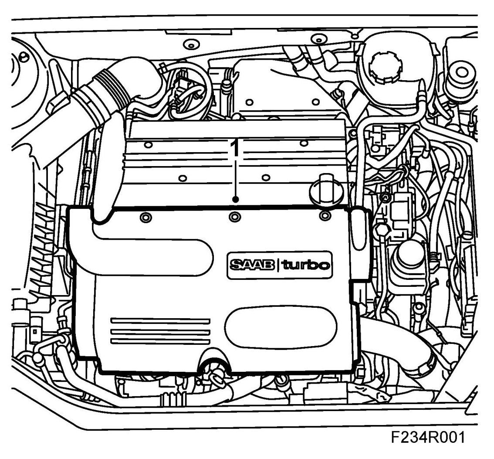
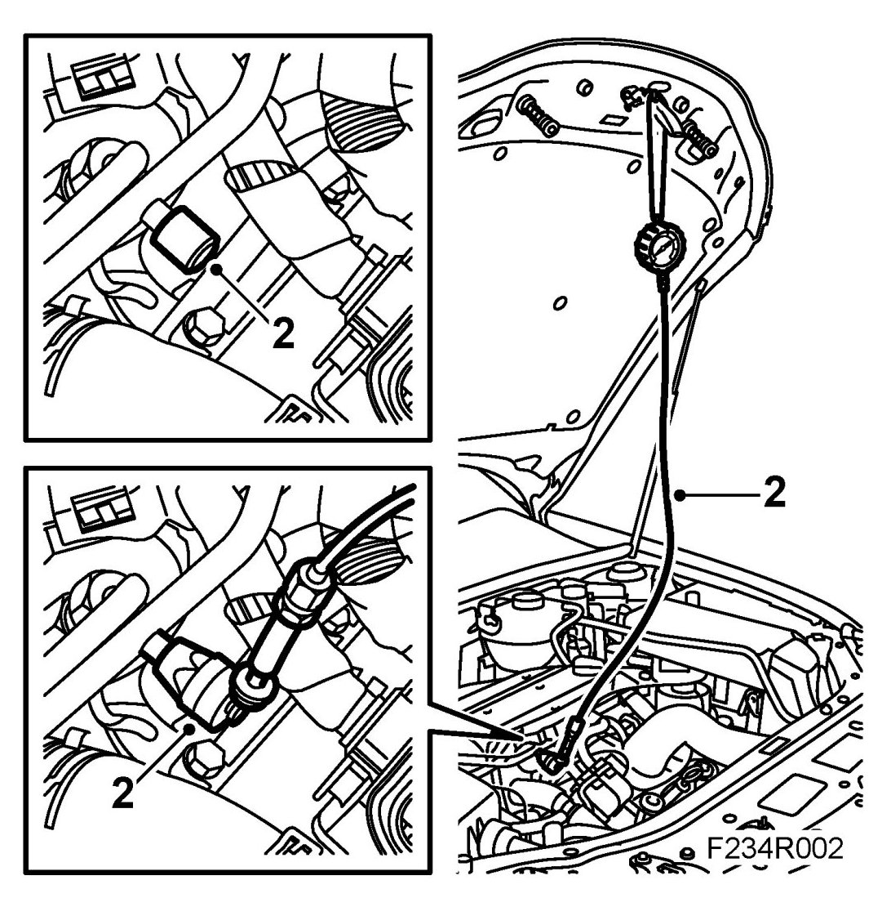
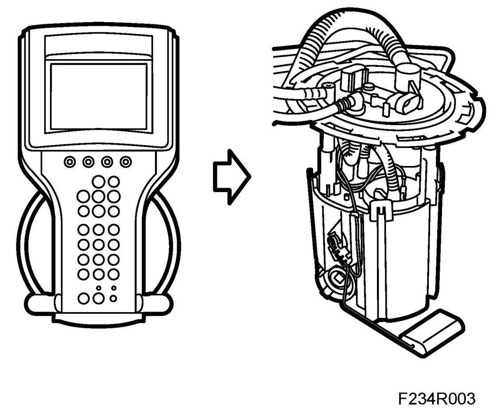
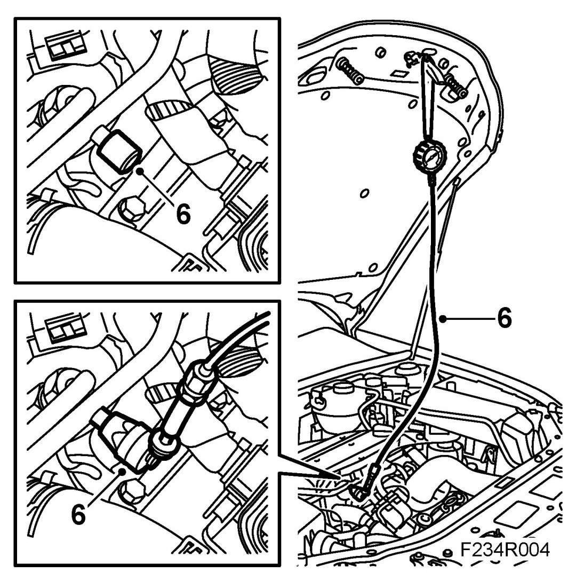
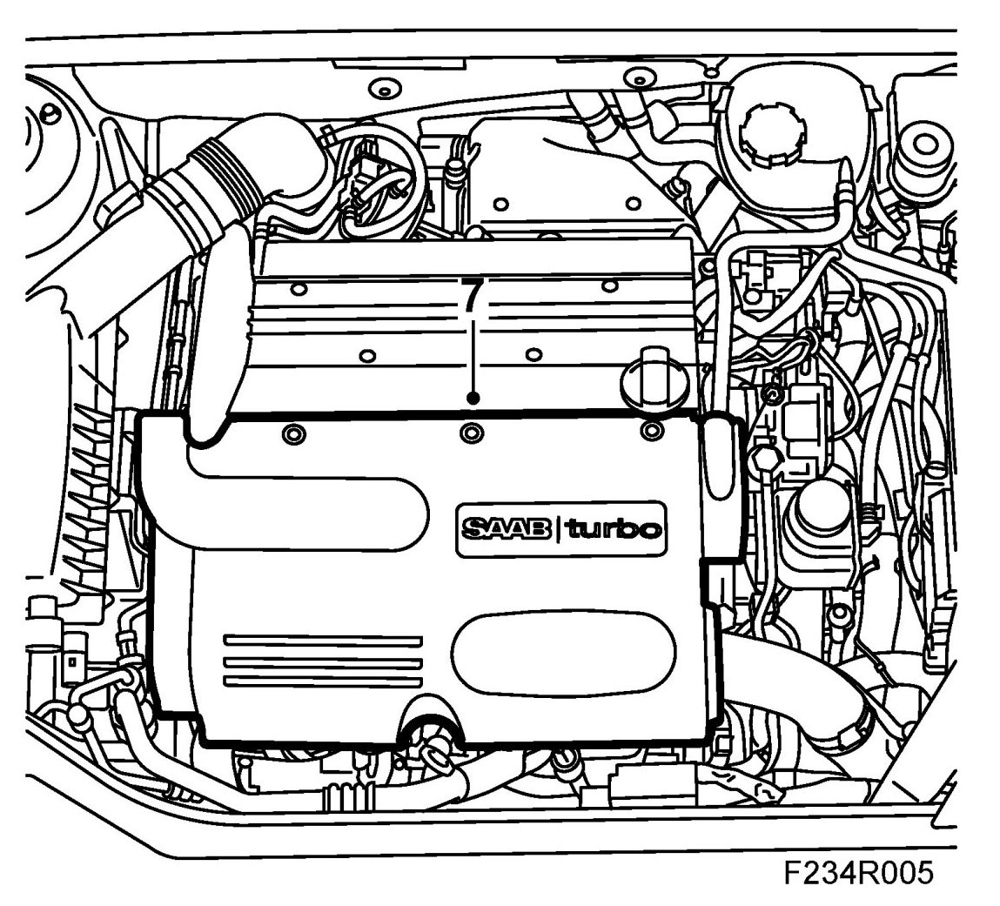

Checking Fuel Pressure
Checking Fuel Pressure
WARNING:
Removal of the fuel pressure regulator is a procedure involving the car's fuel system. It is therefore necessary to observe the following precautions in conjunction with the procedure:
- Ensure good ventilation. If there is approved ventilation for extraction of fuel fumes then this must be used.
- Wear protective gloves. Prolonged exposure of the hands to fuel can cause irritation of the skin.
- Have a fire extinguisher class BE at hand. Be aware of the risk for sparks, i.e. in connection with circuit breaking, short-circuiting, etc.
- Absolutely no smoking.
- Use protective goggles.
Checks
1. Remove the engine cover.

2. Unscrew the valve cap. Connect 83 93 852 Pressure measuring equipment, fuel and oil and 83 94 744 Adapter, fuel pressure gauge. Connect the adapter with "safety on" to the fuel rail. "Safety off" the adapter.

3. Start the fuel pump using the diagnostics tool.

4. Take a reading from the measuring equipment.
5. Switch off the fuel pump using the diagnostics tool.
6. "Safety on" the adapter and remove the pressure measuring equipment from the service nipple. Wipe up any fuel spill with a rag.

7. Fit the engine cover.
